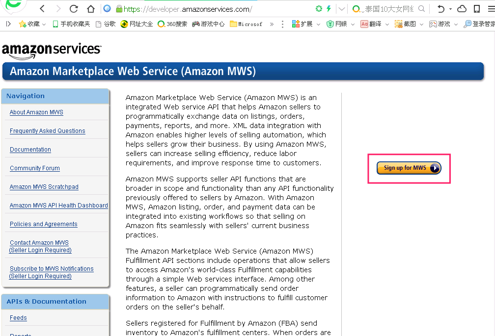
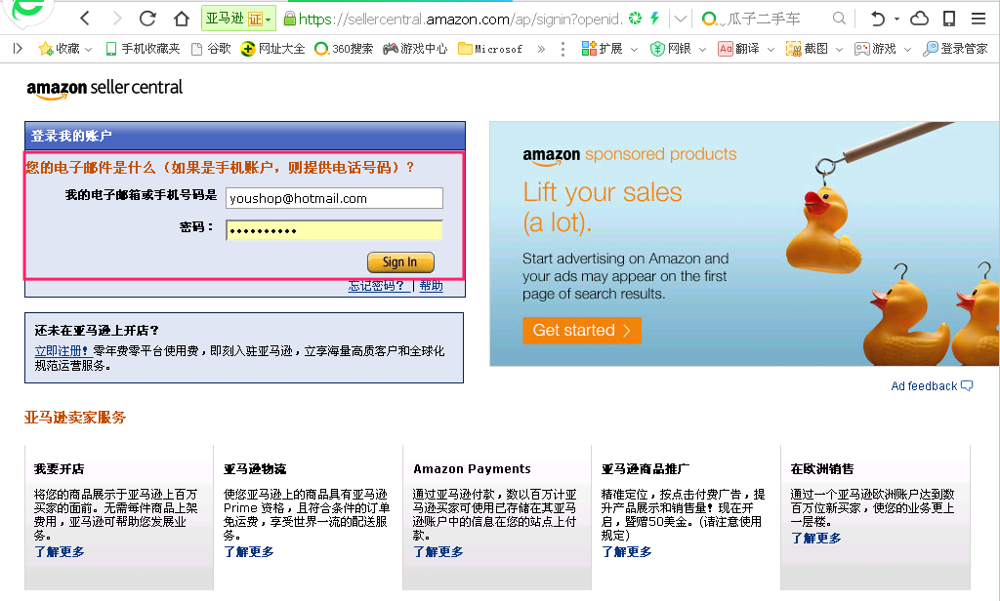
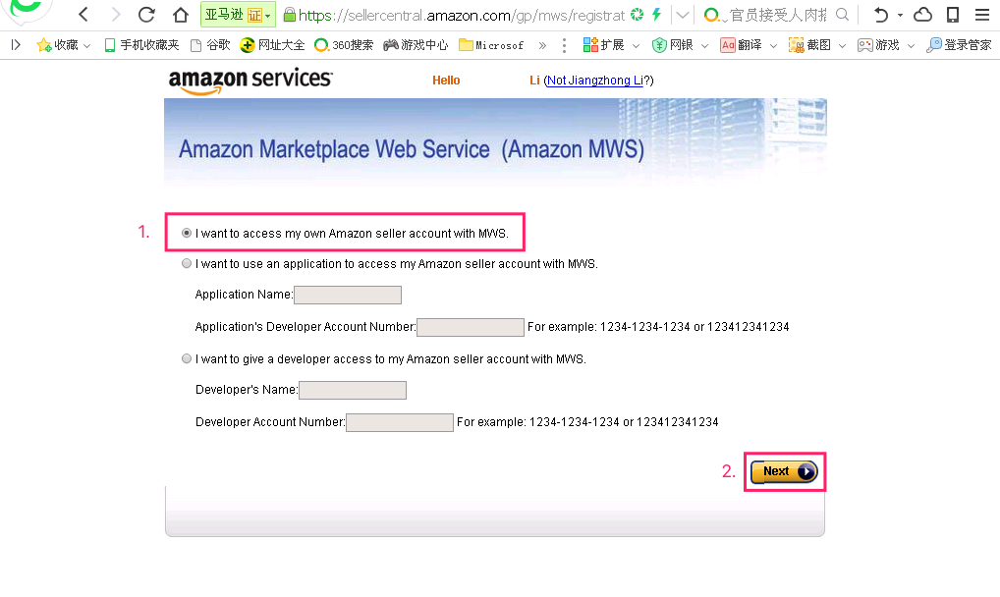
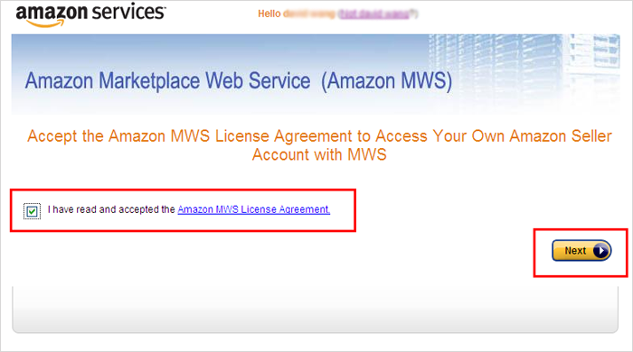
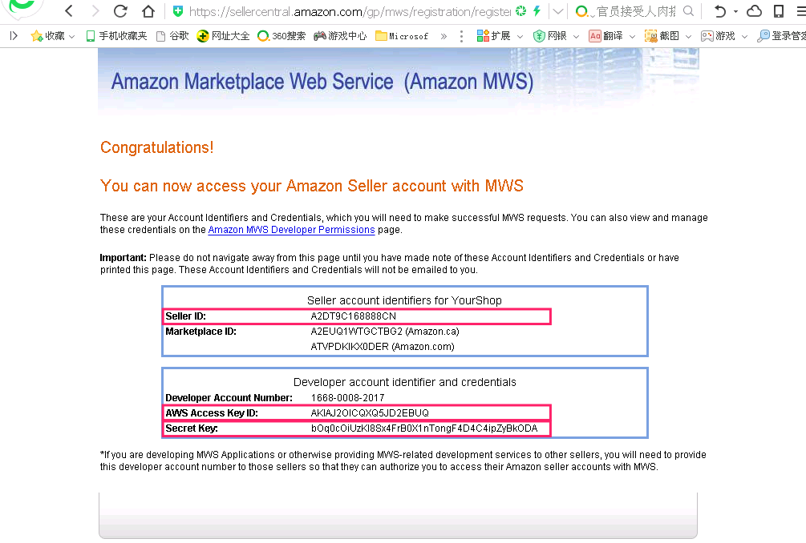
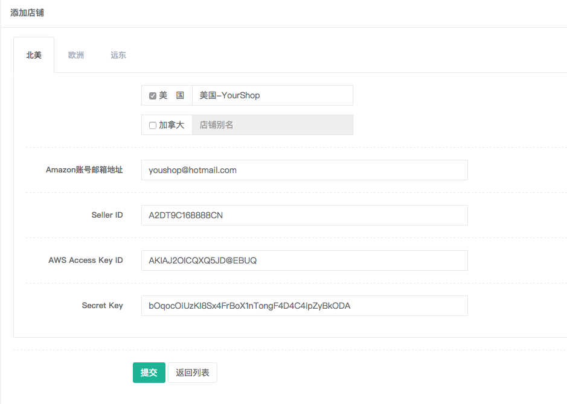
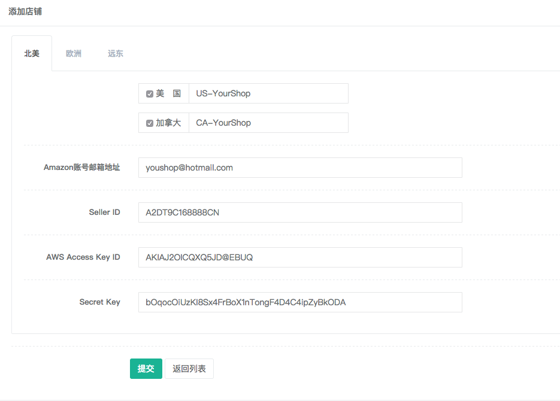

Seller ID，AWS Access Key ID 和 Secret Key 从哪里得到？
温馨提示：请在登录过Amazon 店铺的电脑进行此操作，以免发生关联。
根据您要添加的 Amazon 店铺站点，打开以下相应的链接。 这里以美国（US）为例
美国（US） ：https://developer.amazonservices.com
英国（UK） ：https://developer.amazonservices.co.uk
德国（DE） ：https://developer.amazonservices.de
法国（FR） ：https://developer.amazonservices.fr
印度（IN） ：https://developer.amazonservices.in
日本（JP） ：https://developer.amazonservices.jp
加拿大（CA）：https://developer.amazonservices.ca
西班牙（ES）：https://developer.amazonservices.es
意大利（IT）：https://developer.amazonservices.it
网页打开后，你将看到下图，点击 "Sign up for MWS"（其他站点按钮语言可能不一样）。

然后，输入 Amazon 账户邮箱以密码点击登录。（若之前登录过此步会自动跳过）

接着，选择'I want to access my own Amazon seller account with MWS.'点击'NEXT'

跟着，勾选'I have read and accepted the Amazon MWS License Agreement'点击'NEXT'

最后，视情况复制'Merchant ID' 或者 'Seller ID' 到 'Seller ID' 输入框，接着分别复制 'AWS Access Key ID'，'Secret Key' 到添加店铺页面的相应输入框


如果同一个亚马逊账号，在同一区域（北美 或 欧洲 或 远东），不需要多次获取 'Seller ID'， 'AWS Access Key ID' 和 'Secret Key'，如 yourshop@hotmail.com 这个账号，在加拿大也启用，仅仅是如下图，勾选加拿大，输入加拿大店铺别名如 'CA-YourShop', 点击‘提交’按钮即可
